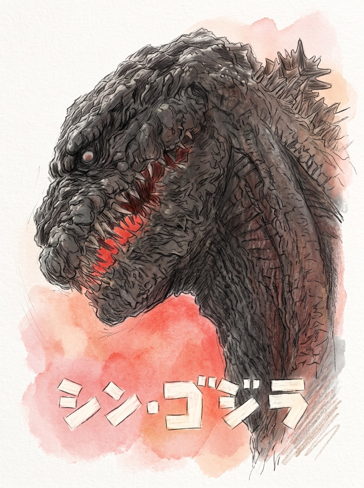
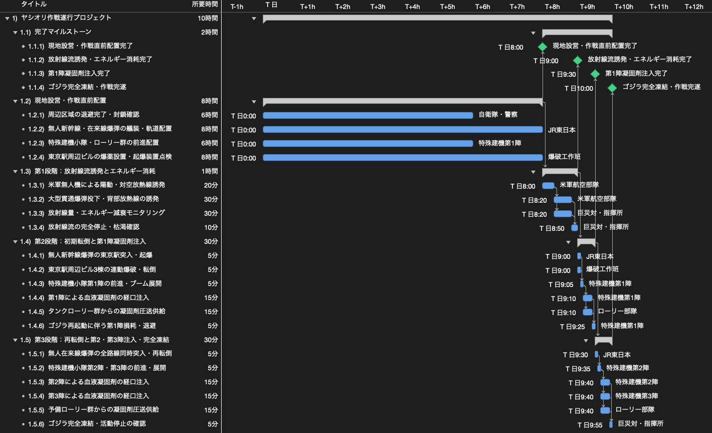

映画「シン・ゴジラ」のヤシオリ作戦を完遂するWBSを作ってみた
今回は「WBSで覗いてみた」シリーズとして、「映画『シン・ゴジラ』のヤシオリ作戦を完遂するWBS」を作成しました。
2016年に公開された映画『シン・ゴジラ』（東宝）のクライマックスでは、東京駅周辺で休眠状態に入ったゴジラに対し、血液凝固剤を経口注入して凍結させる「ヤシオリ作戦」が遂行されます。私自身このヤシオリ作戦のシーンが大好きで何度も観返しているのですが、自衛隊や米軍、JR東日本、民間建設会社の特殊建機小隊など複数の組織が連携するこの作戦をプロジェクトマネジメントの視点で分解し、タスクの依存関係や所要時間を検証してみました。

今回の検証では、極限環境微生物の分子構造解析や、全国の化学プラントを動員した血液凝固剤の製造・集結、各部隊の編成と機材改修、および国連安保理による熱核攻撃の一時延期合意については事前準備として完了している前提としました。その上で、決行当日の深夜0時からの現地設営・安全確保と、午前8時の作戦開始から午前10時のゴジラ完全凍結に至るまでの全工程を対象としています。
1. ガントチャートと工程の検証
全体の工程は、決行当日の現地設営・作戦直前配置から、実戦の第1段階（放射線流誘発とエネルギー消耗）、第2段階（初期転倒と第1陣凝固剤注入）、第3段階（再転倒と第2・第3陣注入・完全凍結）までの4つのフェーズ・20タスクで構成されています。これらに9つの専門部隊リソースを割り当て、プロジェクト管理ツール（OmniPlan）でガントチャートに展開しました。

決行当日の現地設営と作戦直前配置（0:00〜8:00）
作戦開始に先立ち、決行当日の深夜0時から早朝8時までの8時間をかけて現地の設営と配置を行います。具体的には、自衛隊・警察による周辺区域の退避完了と封鎖確認（6時間）、JR東日本による無人新幹線および在来線爆弾への爆薬艤装と突入軌道への配置（8時間）、特殊建機第1陣およびローリー群の前進配置（6時間）、そして爆破工作班による東京駅周辺ビル3棟への爆薬設置と起爆装置の点検（8時間）を4部隊で並行して進め、午前8時の作戦開始までに完了させます。
第1段階から第3段階までの実戦工程（8:00〜10:00）
午前8時の作戦開始とともに第1段階へ移行し、米軍航空部隊の無人機による陽動（20分）に続いて、大型貫通爆弾（MOP2）の背部投下による放熱線の誘発（30分）と、巨災対・指揮所による放射線量およびエネルギー減衰のリアルタイム計測（30分）を並行して実施します。午前8時50分から10分間で放射線流の完全停止と体内エネルギーの枯渇を確認し、午前9時に地上部隊の接近許可を判定します。
続く午前9時からの第2段階では、JR東日本の無人新幹線爆弾（N700系）の東京駅突入・起爆（5分）と、爆破工作班による周辺ビル3棟の連動定置爆破（5分）を同時に行い、午前9時05分にゴジラを初期転倒させます。直ちに特殊建機小隊の第1陣が前進してブームを展開（5分）し、タンクローリー群からの圧送供給（15分）と並行して血液凝固剤の第1次経口注入（15分）を行いますが、ゴジラの再起動と熱線放射に伴い午前9時30分までに残存部隊を緊急退避させます。
午前9時30分からの第3段階では、中央線や山手線、京浜東北線、東海道線の無人在来線爆弾を全路線から同時突入させてゴジラを再転倒（5分）させた後、特殊建機小隊の第2陣・第3陣が前進してブームを再展開（5分）します。午前9時40分から第2陣（15分）、第3陣（15分）、予備ローリー群からの圧送供給（15分）の3ラインを同時稼働させて規定量100%までの注入を完了させ、最終的な凝固反応と活動停止の確認（5分）を経て、午前11時の熱核攻撃タイムリミットの1時間前となる午前10時に完全凍結を達成します。
2. まとめ
今回は、映画『シン・ゴジラ』のヤシオリ作戦を題材に、決行当日の現地設営から完全凍結までの工程をWBSに分解し、タスクの依存関係や各部隊の役割分担、所要時間を検証しました。
大好きなヤシオリ作戦ですが、劇中では次々と展開していく工程も、こうしてWBSとガントチャートに落とし込んで整理してみると、深夜0時から8時間をかけた現地設営のフェーズと、午前8時から2時間で遂行される3段階の実戦フェーズという構成が改めて明確になります。また、自衛隊や米軍、鉄道会社、民間建設会社といった9つの専門部隊がそれぞれの担当工程を並行して進めることで、午前11時の熱核攻撃タイムリミットに対して午前10時に全工程を完了させるスケジュールが成り立っていることを確認できました。
プロジェクト計画の基礎となるWBSの作り方や平準化の考え方について詳しく知りたい方は、「WBSの勘所」や「ガントチャートの決め手は平準化」もぜひ合わせてご覧ください。